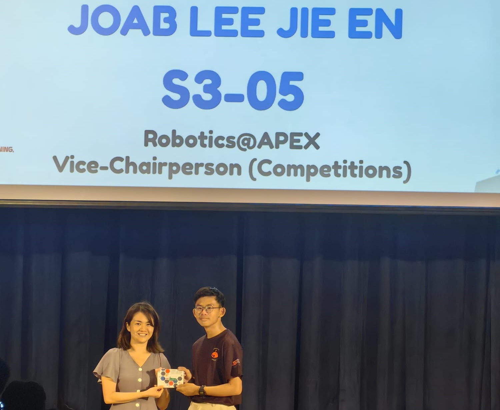
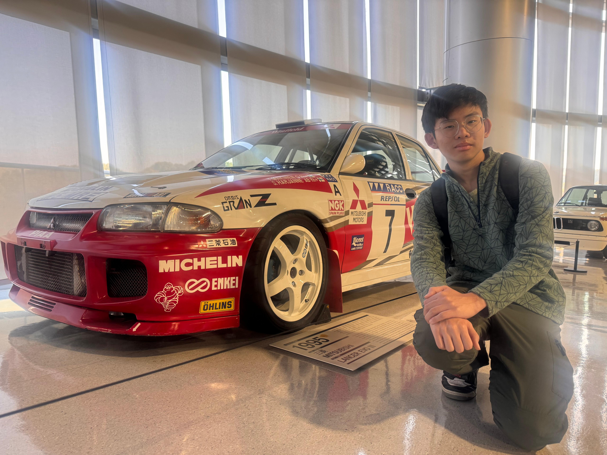

An Engineer
My passion for engineering is rooted in a keen interest in technology and machines. I am fascinated by how different components work together to create innovative systems that solve real-world problems. I love hands-on tinkering and applying my knowledge of physics and mathematics in the field of robotics, where I design robots that can navigate obstacles or improve efficiency through automation.
I also actively seek to expand my understanding of emerging technologies, such as artificial intelligence and 3D printing. Integrating these innovations into practical applications is really enjoyable. This blend of creativity and technical knowledge drives my engineering pursuits as I continue to explore the limitless world of engineering.

Working on my first robotics prototype during the school hackathon.
An Innovator
When faced with challenges, I frequently think outside the box. By participating in hackathons, I have enhanced my idea-generation skills. I actively seek problems and design creative alternatives or prototypes for them. My spirit of innovation fuels my desire to make a meaningful impact in the world.

Booth at HMGICS for the 2025 TechBot Challenge
A Team Leader
Over my 4 years in secondary school, I have developed my leadership capabilities. I have served as the group leader for multiple projects, learning to manage communication within my team. Alongside my academic responsibilities, I served as the Vice-Chairperson of my Robotics Club, where I managed the club’s activities and initiatives. This role has taught me how to inspire and lead my peers, fostering passion and collaboration among members.

SST Leadership Investiture
A Musician
In addition to my engineering pursuits, I am passionate about music, which plays a significant role in my life. I appreciate a wide variety of genres, ranging from oldies and classic hits from the 70s to the 90s, as well as City-pop, and more modern styles like J-pop and Indie-pop. Over the years, I have learned to play the piano and guitar, and I am currently teaching myself to play the Telecaster.
This journey has taught me discipline and creativity, allowing me to express myself in new ways. Music brings me joy and helps me develop my collaborative skills with fellow musicians.
Working on my first robotics prototype during the school hackathon.
A Car Enthusiast
Cars have always been more than just transportation for me; they’re engineering marvels. I fondly remember standing beside my mechanic grandfather as he introduced me to the Internal Combustion Engine (ICE) and the captivating sounds it made.
I have a particular passion for classic JDM (Japanese Domestic Market) vehicles like the Honda NSX, Nissan GT-R, and Mazda RX-7. These cars embody the essence of Japanese automotive engineering, with their timeless designs and rich motorsport heritage.
I love photographing cars and engaging with fellow enthusiasts about these classic models and sharing experiences from car shows. JDM cars are not just vehicles; they represent a legacy of innovation and artistry in the automotive world.
Read my E-book about Cars in Singapore →
Mitsubishi Lancer EVO III
My CliftonStrengths Top 5 | Gallup StrengthsFinder
My natural talents that maximise my potential and contribution to teams.
Relator
I enjoy close relationships, and I find deep satisfaction in working hard with friends to achieve a goal.
Harmony
I look for consensus, and I have no use for unnecessary friction and guide others toward practical solutions.
Empathy
I have an instinctive ability to understand people. I feel others’ emotions as if they were mine.
Adaptability
I much prefer to go with the flow. I take things as they come and discover the future one day at a time.
Responsibility
I take psychological ownership of my commitments, and I am dependable and embrace values such as honesty and loyalty.